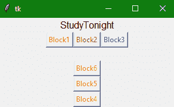

Tkinter 框架小部件
原文：https://www.studytonight.com/tkinter/python-tkinter-frame-widget
Tkinter 框架小部件用于以更好更友好的方式分组和组织小部件。框架小部件基本上是一个容器(一个不可见的容器)，其任务是容纳其他小部件和相对于彼此排列。Tkinter 框架部件在屏幕上组成一个矩形区域。
它基本上充当一个基础类，然后实现复杂的小部件。这就像的 HTML div 标签，它只是用来定义网页上有其他 HTML 元素的部分。
Tkinter Frame Widget
框架小部件的语法如下:
W = Frame(master, options)
在上面的语法中，master参数表示父窗口。您可以使用许多options来更改框架的外观，这些选项被写成逗号分隔的键值对。
Tkinter 框架小部件选项:
以下是框架小部件使用的各种选项:
| 选项名称 | 描述 |
| bd | 该选项用于表示边框的宽度。其默认值为 2 像素。 |
| bg | 该选项用于指示小部件的正常背景颜色。 |
| cursor | 借助该选项，可以将鼠标指针更改为光标类型，即设置为不同的值，如箭头、点等。 |
| height | 该选项用于指示框架的高度。 |
| width | 该选项用于指示框架的宽度。 |
| highlightbackground | 该选项表示背景色在对焦时的颜色。 |
| highlightthickness | 该选项用于指定小部件处于焦点下时边框周围的厚度。 |
| relief | 该选项指定框架边框的类型。其默认值为平板** |
| highlightcolor | 该选项主要用于表示框有焦点时焦点高亮**的颜色。 |
Tkinter 框架小部件示例
下面我们有一个基本的例子，我们将在一个框架小部件中组织不同的按钮小部件。让我们看看下面给出的代码片段:
from tkinter import *
root = Tk()
root.geometry("300x150")
w = Label(root, text ='StudyTonight', font = "80")
w.pack()
frame = Frame(root)
frame.pack()
bottomframe = Frame(root)
bottomframe.pack(side = BOTTOM)
button1 = Button(frame, text ="Block1", fg ="red")
button1.pack(side = LEFT)
button2 = Button(frame, text ="Block2", fg ="brown")
button2.pack(side = LEFT)
button3 = Button(frame, text ="Block3", fg ="blue")
button3.pack(side = LEFT)
button4 = Button(bottomframe, text ="Block4", fg ="orange")
button4.pack(side = BOTTOM)
button5 = Button(bottomframe, text ="Block5", fg ="orange")
button5.pack(side = BOTTOM)
button6 = Button(bottomframe, text ="Block6", fg ="orange")
button6.pack(side = BOTTOM)
root.mainloop()

在上面的代码示例中，我们创建了两个框架小部件，然后在这些框架中添加了 3 个按钮，并使用 Tkit 几何管理器在应用窗口中排列按钮，
摘要
在本教程中，我们了解了 Tkinter Frame 小部件，以及如何使用它来管理其他 Tkinter 小部件并正确定位它们。